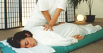
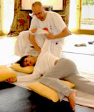

La palabra shiatsu significa Shi “dedo” y atsu “presión”, quiere decir
entonces presión con los dedos. El shiatsu es un método de sanación natural
que se activa a través de un masaje de acupresión. Es una técnica
terapéutica de masaje originada en Japón. Sigue principios similares a la
acupuntura ya que la aplicación del tratamiento es sobre los meridianos o
canales energéticos que recorren todo nuestro cuerpo físico. En shiatsu el
masaje se realiza con los pulgares, manos, dedos, y codos, los cuales son
usados para aplicar presión sobre ciertos puntos del cuerpo.
El Chi, que así llaman a la energía vital, fluye a través del cuerpo en una
serie de canales. Por muchas razones diferentes el Chi puede dejar de fluir
libremente y esto produce entonces un síntoma. La técnica shiatsu incluye
estirar, apalancar e inclinar el peso en varias partes del cuerpo para
fomentar una mayor armonía de circulación, flexibilidad e integridad
postural. Muchas de las técnicas se aplican sobre el mismo sistema de
canales ...
de energía o meridianos que se usan en acupuntura, a pesar de que
en Shiatsu cada canal cubre una mayor área del cuerpo.
El Shiatsu combate el desequilibrio del cuerpo, la mente y el espíritu. El
potencial terapéutico del Shiatsu fue redescubierto en Japón a principios
del siglo XIX y fue precisamente un japonés de nombre Tamai Tempaku quien
elaboró la técnica actual del Shiatsu al combinar las técnicas
tradicionales y los conocimientos fisiológicos y anatómicos de la medicina
occidental. Su principio de base es la noción de la energía vital (Chi en
chino o Ki en japonés).

Las técnicas terapéuticas varían, ciertos practicantes de Shiatsu trabajan
los Tsubos o puntos específicos, como en la acupresión china o Shen-tao,
otros utilizan masajes generales para estimular los meridianos.
El Shiatsu sirve para reintegrar la vitalidad del cuerpo, ayuda a regular
el sistema hormonal, la circulación sanguínea y del liquido linfático, para
eliminar desechos y disminuir la tensión muscular. Permite también
disminuir el estrés, el insomnio y consolida las capacidades de
auto-sanación.
El shiatsu consiste en ejercer una suave presión sobre puntos del
organismo, haciendo énfasis en ambos lados de la columna vertebral. La
presión se coordina con la respiración del paciente para fluir y equilibrar
la energía de cada órgano y conseguir la relajación.
Para aplicar presión sobre la piel se utilizan las palmas de las manos,
dedos, codos, antebrazos, rodillas y pies, sin instrumentos ni cremas. Para
movilizar a nivel energético se hacen estiramientos, rotaciones de
articulaciones, fricciones, levantamientos, rodamientos y percusiones.
El shiatsu se basa en la idea de que la salud está relacionada con el flujo
de energía que circula a través de senderos o ‘meridianos’ a lo largo del
cuerpo, conectados con los órganos internos y con las emociones, y a lo
largo de estos canales se ejerce la presión.
El shiatsu estimula la capacidad del organismo de auto curarse
naturalmente. Puede ser utilizado por quienes estén pasando por un momento
de tensión emocional que repercute en todo el organismo.
Es muy efectivo para aliviar alteraciones del sueño, ansiedad, cansancio
crónico, depresión, estrés, insomnio, nerviosismo, neurosis, tensiones
musculares, dolores de espalda o de cabeza, estreñimiento, colitis,
alergias, asma, contracturas, lesiones deportivas, lumbalgias, desórdenes
metabólicos, de menstruación, endocrinos, urinarios y reproductores, entre
otras cosas.
También mejora el tono de la piel, la flexibilidad muscular, la claridad
mental, la concentración, los ligamentos, los sistemas digestivo,
respiratorio y linfático, los problemas menstruales, la circulación
sanguínea, fomenta un embarazo sano, facilita el parto, ayuda a mejorar la
postura y a crear conciencia del propio cuerpo.
Un tratamiento de shiatsu consiste en una serie de varias sesiones de una
hora cada una. Es necesario recibir más de una sesión pero los resultados
son evidentes desde la primera.
El terapeuta y el paciente se visten con ropas cómodas, preferiblemente de
algodón. El lugar debe ser una habitación amplia, aireada y silenciosa para
que se sientan a gusto. Se trabaja en silencio o con música. El paciente no
necesita desvestirse y permanece sobre el suelo o una superficie no muy
blanda.
El terapeuta produce una movilización corporal y energética para reconocer
las causas del problema de salud. La presión con los dedos no debe ser muy
fuerte ni muy débil, sino justa para proporcionar calor a las zonas.
Después de cada sesión, paciente y terapeuta deben expresar cómo se
sienten. El paciente suele alcanzar un estado de bienestar general que se
prolonga por varias horas o incluso días.